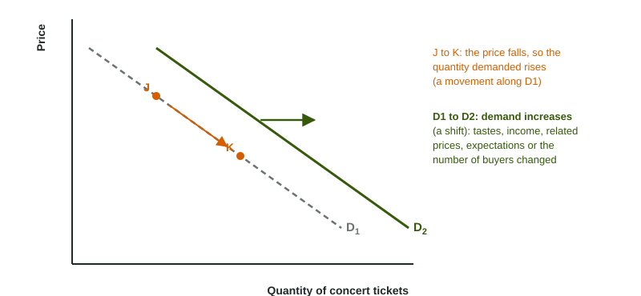

When a smoothie stand drops its price on a hot afternoon, the line gets longer. When a new campus opens next door, the line gets longer too, even at the old price. Both mean more smoothies sold, but economists describe them with different words and draw them differently, and the exam scores the difference.
The law of demand
Demand describes how much of a good buyers are willing and able to buy at each price. A table of prices and amounts is a demand schedule; drawn on a graph with Price on the vertical axis and Quantity on the horizontal axis, it is the demand curve.
The law of demand says that as the price of a good rises, the quantity demanded falls, other things equal. The demand curve slopes downward. Two effects explain why:
- The substitution effect: when a good's price falls, it becomes cheaper compared with its alternatives, so buyers switch toward it.
- The income effect: when a good's price falls, buyers' incomes stretch further, so they can afford more of it.
Worked example: read a demand schedule. A smoothie stand's buyers want 100 smoothies a day at $2, 80 at $3, 60 at $4, 40 at $5 and 20 at $6.
- Direction. Each $1 rise in price comes with 20 fewer smoothies wanted: an inverse relationship, the law of demand.
- A change in quantity demanded. If the price rises from $3 to $5, the quantity demanded falls by smoothies a day. That is a movement along one demand curve.
- A change in demand. If a heat wave makes buyers want 30 more smoothies at every price (130 at $2, 110 at $3, and so on), the whole schedule changes: demand has increased, and the curve shifts right.
Quantity demanded versus demand

This is the shift-versus-movement rule applied to buyers. The good's own price is on the vertical axis, so a change in that price moves buyers along the demand curve: a change in quantity demanded, from J to K in the figure. A change in anything else that affects buyers shifts the whole curve: a change in demand, from D1 to D2. "The price rose, so demand fell" is the classic slip; the correct sentence is "the price rose, so the quantity demanded fell".
What shifts demand
| Determinant | Shifts demand right when | Example |
|---|---|---|
| Tastes and preferences | buyers like the good more | a study says oatmeal is healthy |
| Income | income rises, for a normal good; income falls, for an inferior good | more pizza as incomes rise; fewer store-brand noodles as incomes rise |
| Price of a substitute | the substitute's price rises | coffee costs more, so tea demand rises |
| Price of a complement | the complement's price falls | cheaper hot dogs raise demand for buns |
| Expectations | buyers expect the price to rise soon, or their income to rise | buy now before the price goes up |
| Number of buyers | more buyers enter the market | a new campus brings 10,000 students |
Substitutes are goods used in place of each other (coffee and tea, butter and margarine): a higher price of one raises demand for the other. Complements are goods used together (gasoline and SUVs, hot dogs and buns): a higher price of one lowers demand for the other.
Worked example: shift or movement? Four events in a city's electric scooter market.
- Gasoline prices jump. Car trips cost more, and scooter rides are a substitute for them, so demand for scooter rides shifts right.
- 10,000 students arrive. More buyers: demand shifts right.
- Riders learn ride prices will drop next month. They wait: today's demand shifts left.
- The company raises its own price per ride. That is the good's own price: a movement up along the demand curve to a smaller quantity demanded. No shift.
On a graph, show an increase in demand by drawing D2 to the right of D1 with an arrow, and a decrease by drawing D2 to the left. Keep the labels: Price and Quantity on the axes, D1 and D2 on the curves. In the next two topics the demand curve meets the sellers' side of the market, and the change in demand moves the market's price and quantity.